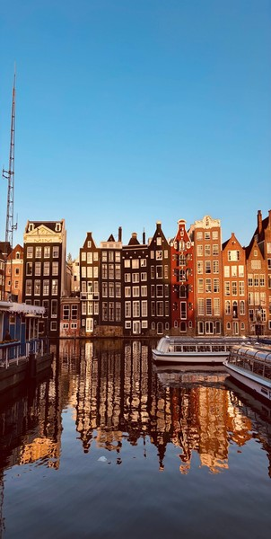
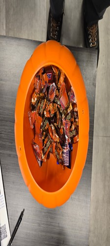

Original Image
Original Image (JPG) | Original Image as a GIF | Original Image in Greyscale | Original Image in Black and White
This page demonstrates the correct ways to handle images on a website, and how not to do it. Using two photos, one from Pexels.com and one I took myself, it compares image formats (JPG, GIF, greyscale, and black and white), resizing an image with CSS versus resizing it in an image editor, what happens when an image is stretched out of proportion, and why enlarging a small image with CSS makes it look blurry.
I picked this photo for its fine detail: window frames, brickwork and rippled reflections. It was taken by Mehmet Çetinkaya (ADD A FACT ABOUT HIM FROM HIS PEXELS PROFILE). It shows tall, narrow canal houses lit by evening sun, reflected in the water beside two tour boats. The original is a JPG that is 1932 x 2576 pixels and 0.74 MB.
Original Image (JPG) | Original Image as a GIF | Original Image in Greyscale | Original Image in Black and White

I took this photo myself on November 10, 2026 at ADD LOCATION. The pumpkin bucket’s opening is a near circle, shot from directly above with my shoes in the frame. The original is a JPG that is 2576 x 2576 pixels and 0.92 MB.
Original Image (JPG) | Original Image as a GIF | Original Image in Greyscale | Original Image in Black and White
